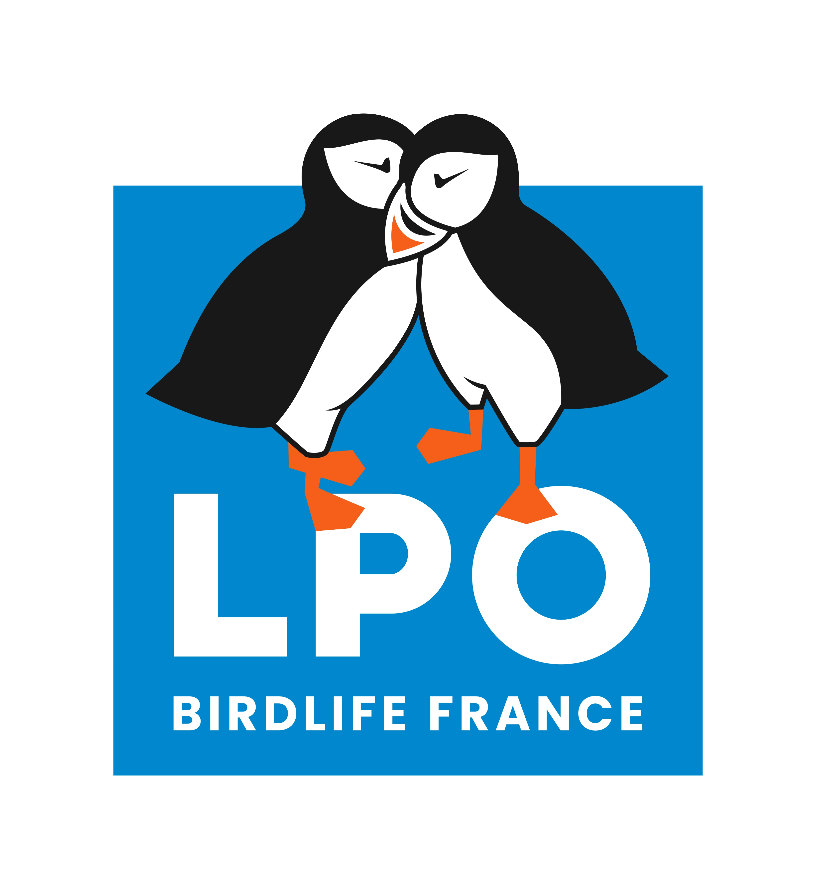

Les associations
Foire aux questions
(Proposée par Coordination SUD, plate-forme nationale regroupant 182 ONG françaises de solidarité internationale)
C’est quoi une ONG et combien en existe-t-il en France et dans le monde ?
Comment fonctionnent-elles et quelles sont leurs principales missions ?
Les ONG sont régies par un fonctionnement démocratique et non lucratif. En France, en tant qu’association loi « 1901 », sont généralement reconnues comme ONG, toute structure regroupant des individus ou des personnes morales (des organisations) qui souhaitent mettre en commun, d’une façon permanente, leurs connaissances ou leur activité dans un but autre que de partager des bénéfices. Elles sont donc composées de personnes ou d’entités adhérentes organisées autour de statuts pour piloter l’ONG de manière désintéressée, c’est-à-dire sans rétribution financière. Les adhérentes et adhérents, quels que soient leurs niveaux d’engagement, sont donc bénévoles, et les organisations adhérentes ne touchent pas de gratifications financières (dividendes, actions, etc.). Elles sont généralement différentes des financeurs (nous y reviendrons !). Le pilotage des ONG par les personnes adhérentes (physiques ou morales) s’organise souvent autour d’assemblées générales, de conseils d’administration et de bureaux (comme la plupart des associations). Les ONG sont classées en trois catégories : solidarité internationale (dont l’humanitaire), droits humains et environnement, bien que nombre d’entre elles soient aujourd’hui actives dans ces trois domaines. Elles ont plusieurs types de mission. Certaines font de l’aide humanitaire (distribution de nourriture, aide médicale d’urgence, réponses aux catastrophes naturelles, etc.) ou de l’aide au développement (appui au développement de systèmes agricoles soutenables ou de systèmes éducatifs, lutte contre les violences faites aux femmes, etc.) à l’international. D’autres sont actives, en France ou en Europe, par exemple, sur des missions d’accueil des populations exilées ou de sensibilisation aux enjeux de développement durable et de solidarité (dans les écoles, les Universités, etc.). Enfin, certaines sont spécialisées sur des actions de plaidoyer politique, ou mènent des campagnes de mobilisation citoyenne. Ces dernières sont généralement les plus visibles dans l’espace public et médiatique. Les plus grandes ONG mènent souvent plusieurs de ces missions.
Comment sont-elles financées et où va l’argent ?
Ce qui différencie aussi les ONG, c’est leur taille budgétaire, c’est-à-dire le nombre de ressources qu’elles mobilisent ! Il existe de très petites ONG (on parle alors de « nano » ou « pico ONG »), qui disposent de quelques dizaines de milliers d’euros par an. À l’inverse, existent aussi de très grandes ONG, aux budgets annuels de plusieurs centaines de millions d’euros par an. Et entre les deux, il y a plein de cas différents ! Coordination SUD montre dans son étude sur les modèles socio-économiques des ONG de solidarité internationale que le secteur est partagé entre une quinzaine de grandes et très grandes ONG (Médecins du Monde, Action Contre la Faim, le CCFD-Terre Solidaire, etc.), et une diversité de moyennes (Solidarité Laïque, Solthis, etc.) et plus petites ONG, beaucoup plus nombreuses (KuriOz, Fondation France Libertés, Equipop, etc.). Cette diversité reflète aussi la pluralité des sources de financement des ONG. Si les ONG françaises sont, en 2020, davantage financées par les bailleurs publics (État, collectivités territoriales, agences de l’UE ou de l’ONU) à hauteur de 58 %, leurs ressources sont plurielles. Ainsi, en 2020, 43% de leurs ressources sont des ressources publiques internationales (donc non françaises), et la générosité du public les finance à hauteur de 27% par an. Le mécénat d’entreprise représente, quant à lui, moins de 5% de leurs ressources totales. En termes de dépenses, deux grands enseignements à retenir :
- Les ONG, quelle que soit leur taille, sont en recherche constante d’efficacité : leurs frais de fonctionnement (ex. : loyer du siège social) et de collecte sont stables depuis plusieurs années et représentent entre 10 et 19 % de leurs dépenses totales. Très concrètement, cela veut dire que pour 10 euros donnés à une ONG, entre 8 et 9 euros vont directement aux personnes bénéficiaires de leurs activités.
- Les ONG françaises sont capables de se déployer au plus près des besoins des populations vulnérables, en Afrique sub-saharienne, au Moyen-Orient, mais aussi en France.
Si elles sont bien financées, à quoi sert le Zevent ?
C’est vrai, les ONG, en particulier les ONG humanitaires, sont de plus en plus financées. Leurs ressources ont augmenté de 43% entre 2016 et 2020, pour atteindre 2,3 milliards d’euros par an. Mais la particularité du contexte international actuel démontre que les crises s’additionnent : Afghanistan, Syrie, Yémen, Ukraine, et sans parler de celles bien souvent oubliées). L’agence des Nations Unies dédiée aux enjeux humanitaires estime ainsi qu’en 2022, 273 millions de personnes auront besoin d’aide humanitaire et d’assistance, soit 41 millions de plus qu’en 2021. Pour y faire face, il faudra mobiliser 41 milliards de dollars pour la seule année 2022. Or, ces dix dernières années, et de façon stable, ce sont chaque année près de 40% des sommes espérées qui manquent à l’appel. Les fonds alloués pour répondre aux crises doivent donc augmenter. En France, les besoins sont également immenses. Le constat du dernier rapport de la Fondation Abbé Pierre sur l’état du mal-logement en France est sans appel : 300 000 hommes, femmes et enfants étaient privés de domicile en France en 2020. La FAGE, premier syndicat étudiant, nous dit que près de 20% des 18-24 ans vivent sous le seuil de pauvreté. Et c’est sans parler des enjeux climatiques et environnementaux ! Pour lutter contre le réchauffement climatique et ses conséquences, il est essentiel d’investir massivement dans la transition écologique. Le GIEC estime qu’il faut multiplier de 3 à 6 les ressources dédiées pour limiter l’élévation des températures. Pour cela, il faut continuer de mobiliser les citoyennes et citoyens, notamment par les associations, pour qu’elles et ils fassent pression sur les pouvoirs publics. Enfin, la crise sanitaire du COVID-19, n’a fait qu’accentuer les déséquilibres, en France ou ailleurs. Or, si les ONG sont capables d’apporter une partie des réponses à ces besoins, elles restent aujourd’hui particulièrement fragiles. En 2020, près d’une ONG sur quatre présentaient des résultats déficitaires, c’est-à-dire dépenser plus d’argent que ce qu’elles perçoivent. La mobilisation de tous et toutes, individus comme organisations publiques et privées, est donc essentielle, pour répondre à ces besoins croissants. Un événement comme le Zevent, fort du succès de ces précédentes éditions, par les communautés qu’il mobilise et la visibilité qu’il offre aux ONG retenues chaque année, est donc devenu un des maillons importants de cette indispensable et plus que nécessaire chaîne de solidarité.
Mais est-ce les ONG sont vraiment transparentes ?
Comme toutes les organisations mobilisant des ressources, les ONG ont des obligations importantes en termes de transparence et de redevabilité. Elles doivent d’abord rendre des comptes à leurs membres adhérents ! Et elles publient ainsi chaque année des rapports d’activités financiers complets, permettant de comprendre comment elles ont géré les fonds mobilisés (en plus des informations présentes sur leurs sites internet). Vous pouvez d’ailleurs retrouver les derniers rapports des associations sélectionnées pour cette édition 2022 sur leurs sites respectifs (par exemple ici, là, ou encore par ici). Par ailleurs, les associations qui reçoivent plus de 153 000 euros de subventions publiques par an sont obligées de faire vérifier leurs comptes annuels par un commissaire aux comptes (comme les entreprises), dont le rapport (bon ou mauvais) est accessible publiquement en ligne par tous et toutes. Enfin, certains financeurs publient d’eux-mêmes les informations des projets d’ONG qu’ils financent, notamment l’Agence Française de Développement, la Fondation de France ou encore la Fondation Ensemble. À vous de jouer ! Vous avez d’autres questions sur les modèles socio-économiques des ONG ? Consultez la version complète de l’étude de Coordination SUD Vous n’avez pas le temps ? Consultez la synthèse de cette étude Vous n’avez pas trouvé réponse à vos questions ? Contactez Coordination SUD C’est quoi Coordination SUD ? Coordination SUD est la coordination nationale des ONG françaises de solidarité internationale (OSI). Elle rassemble, aujourd’hui, 182 ONG qui mènent des actions humanitaires d’urgence, d’aide au développement, de protection de l’environnement, de défense des droits humains auprès des populations défavorisées ou encore de plaidoyer et d’éducation à la citoyenneté et à la solidarité internationale. En savoir plus : www.coordinationsud.org
Fondation de France
Pour le ZEvent 2022, la Fondation de France assure la collecte des dons et le reversement aux 4 associations bénéficiaires : LPO, Sea Shepherd, The SeaCleaners et WWF.
La Fondation de France, premier réseau de philanthropie en France
Chacun de nous a le pouvoir d’agir pour l’intérêt général. Cette conviction est, depuis plus de 50 ans, le moteur de la Fondation de France. Chaque jour, elle encourage, accompagne et transforme les envies d’agir en actions utiles et efficaces pour construire un monde plus apaisé, solidaire et durable. La Fondation de France a développé un savoir-faire unique en s’appuyant sur les meilleurs experts, des centaines de bénévoles et des milliers d’acteurs de terrain, dans tous les domaines de l’intérêt général : aide aux personnes vulnérables, recherche médicale, environnement, culture, éducation… Avec les 945 fondations qu’elle abrite, elle soutient chaque année plus de 10 000 initiatives prometteuses et innovantes, en France et à l’international. Indépendante et privée, elle agit grâce à la générosité des donateurs.
Quel rôle joue la Fondation de France pour le Z Event 2022 ?
Pour cette nouvelle édition, le ZEvent 2022 regroupe pour la première fois plusieurs associations bénéficiaires, ce qui complexifie la gestion de cette opération. La Fondation a une expertise reconnue dans la gestion de ce type d’opération. Afin de garantir son bon déroulement, la Fondation de France assure la collecte des dons de « ZEvent pour l'environnement », leur reversement de manière équitable aux 4 associations bénéficiaires et l’envoi du reçu fiscal aux donateurs. La Fondation de France assurera notamment le suivi des projets menés par les associations grâce à ces dons, et notamment leur caractère d’intérêt général.
Sea Sheperd
Fondée en 1977 par le capitaine Paul Watson, SEA SHEPHERD est l'ONG de défense des océans la plus combative au monde.
L'océan est un enjeu écologique majeur ; sa protection, un défi particulièrement important notamment en France au regard de l’énorme territoire maritime français, le deuxième plus vaste au monde avec près de 11 millions de kilomètres carrés.
Que faisons-nous ?
Sea Shepherd défend activement l'océan et toutes les formes de vie marine. L'ONG a réussi à développer la seule Marine du monde entièrement dédiée à la protection des écosystèmes marins. Entièrement financée grâce aux dons des citoyen(ne)s, Sea Shepherd est indépendante des gouvernements. Depuis 45 ans, son cœur de métier est la lutee contre le braconnage et la surpêche mais également, la sensibilisation du grand public à l'ensemble des menaces qui pèsent sur l'océan les animaux marins.
95%
des dons affectés aux missions de terrain
98%
de bénévoles
8 mois
de missions par an pour l'antenne française
Où votre association agît-elle?
Sea Shepherd France agit directement partout en France et à Mayote et participe financièrement, logistiquement et humainement aux missions de Sea Shepherd Global partout dans le monde et notamment en Afrique de l'Ouest, dans la lute contre la surpêche étrangère qui détruit l'écosystème local et affame les populations.
Aujourd'hui, quelle est votre principale problématique sur le plan environnemental ?
La première menace qui pèse sur la vie marine et sur la survie de l'océan est la surpêche et la pêche illégale. C'est donc notre préoccupation première ( mais non exclusive)
Quel est votre projet phare pour 2022 ?
Plusieurs missions sont prévues mais avec un focus sur l'impact destructeur des navires-usines, ces chalutiers géants qui peuvent pêcher l'équivalent de 250 tonnes de poissons en une seule journée. La mission s'appelle "Opération Ocean Killers".
Quelles nouvelles actions pourriez-vous mener grâce à votre participation au Zevent ?
Les fonds collectés grâce au Zevent pourraient nous aider à financer en partie ou en totalité l'achat d'un navire capable de rester en mer plusieurs jours sur les zones de pêche des chalutiers géants et de les suivre dans la durée, chose impossible avec nos moyens maritimes actuels (un semi-rigide).
Comment pouvons-nous vous aider dans vos actions de tous les jours ?
La surpêche étant la pire menace qui pèse sur l'océan et le premier facteur de destruction de l'écosystème marin, stopper ou réduire drastiquement sa consommation de poisson est le meilleur service que l'on puisse rendre à l'océan.

Découvrir la nature avec la LPO
S'engager aux côtés de la LPO
LPO : sauvons la nature ensemble
On entend dire que la biodiversité s’effondre, mais qu’est-ce que ça veut dire concrètement ?
Cela signifie que nous avons vu et voyons disparaitre à jamais des espèces à un rythme effréné, 100 à 1000 fois supérieur au rythme naturel. Certains scientifiques parlent d’une 6ème extinction de masse, la cinquième extinction ayant vu s’éteindre les dinosaures et les trois quarts des espèces vivantes sur Terre il y a 66 millions d’années. Depuis 1970, les populations mondiales de vertébrés sauvages ont diminué d’environ 40% dans les habitats terrestres, et de plus de 80% dans les milieux d’eaux douces. Seuls 4% de la biomasse des mammifères sur la planète est aujourd’hui constituée d’animaux sauvages, contre 60% de bétail et 36% d’êtres humains. Les oiseaux ne pèsent plus que 28% par rapport aux 72% de volailles d’élevage ! La situation est extrêmement grave : 75% des espèces sauvages sont susceptibles de disparaitre à court terme. Les causes sont connues, elles sont toutes d’origine humaine: artificialisation et destruction des milieux, pollutions diverses, surexploitation des ressources, réchauffement climatique, introduction d’espèces exotiques envahissantes. Heureusement des solutions existent. La LPO les élabore et les met en œuvre sur le terrain avec l’appui de ses 65000 adhérents, 8000 bénévoles et quelques centaines de professionnels répartis sur tout le territoire français. Les résultats prouvent que ça marche : des espaces naturels ont été protégés, des espèces remarquables comme les cigognes, les vautours, les loutres, les castors et même le loup sont revenues ! Tout un chacun peut intervenir à son niveau, dans ses choix de consommation, dans ses comportements, dans son implication personnelle ou professionnelle au quotidien.
La LPO agit concrètement au plus près du terrain avec l’aide des citoyens
Par la connaissance
grâce notamment aux sciences participatives, la LPO rassemble et analyse les données naturalistes depuis plusieurs dizaines d’années, ce qui permet de suivre l’évolution de l’état de conservation des espèces et de guider les priorités d’action.
Par la sauvegarde des espèces
la LPO a créé et gère des centres de soins pour la faune sauvage où sont recueillis et soignés des milliers d’animaux blessés avant d’être relâchés dans la nature. La LPO mène également des programmes de protection d’espèces menacées et milite contre les abus de la chasse.
Par la protection des espaces
la LPO acquiert et préserve des espaces naturels protégés, organise des chantiers participatifs avec ses bénévoles, promeut le développement durable et lutte contre la dégradation des habitats par l’artificialisation, la surexploitation des ressources et les pollutions.
Par l’éducation et la mobilisation
la LPO intervient auprès de tous les publics pour que chacun puisse agir concrètement à son échelle pour la sauvegarde de la biodiversité, par exemple à travers les programmes Refuges LPO et Nature en ville.
A quoi vos dons vont-ils servir?
Vos dons vont tout simplement nous aider à protéger la biodiversité. 1 € c’est le coût du nourrissage quotidien d’un animal blessé ou affaibli en centre de soins 13 € nous permettent de protéger les oiseaux marins en collectant un sac de 20L de déchets sur la plage 30€ nous permettent d’installer un nichoir pour hirondelles 100€ c’est le coût d’acquisition de 250 m² d’espace naturel ainsi protégé
CDSLPO Aquitaine
Bruno Berthémy
Des questions sur la LPO ?
Notre expertise technique et scientifique, acquise par une présence continue sur le terrain, est reconnue, tout comme la pertinence de nos analyses. En 2017, un cabinet indépendant a estimé que pour 1€ confié à la LPO, nous en rendions 20 à la société française en retombées écologiques, sociales et économiques. Reconnue d’utilité publique, la LPO fait l'objet de contrôles annuels de la Cour des comptes qui garantissent la qualité de son fonctionnement et le bon usage des fonds qui lui sont confiés.
Merci au ZEvent 2022 de mettre en avant et de soutenir la protection de l’environnement.
La LPO souhaite à tous les participants un excellent week-end de divertissement utile à la planète. N’hésitez pas à venir à notre rencontre pour découvrir les valeurs et les actions de la LPO !
En savoir plus sur les actions de la LPODécouvrir la nature avec la LPO
S'engager aux côtés de la LPO
WWF
Le WWF c’est une (très) grosse équipe de pandas qui travaille dans plus de 100 pays partout dans le monde pour protéger la planète, c’est-à-dire protéger la nature et tous ses êtres vivants. Une mission ambitieuse et vitale qui nécessite d’agir sur tous les fronts : climat, énergie, alimentation, forêt, vie sauvage, océans. Nous travaillons au plus près du terrain pour préserver cette maison que nous partageons toutes et tous. Auprès des populations locales nous nous mobilisons dans des programmes de terrain afin de maintenir et protéger les tortues de Nouvelle-Calédonie, les mangroves de Madagascar, la forêt amazonienne de Guyane, les éléphants d’Afrique etc. Une diversité d’actions complétée par de la sensibilisation auprès du public, des politiques, des acteurs économiques mais aussi d’analyse et de publication de données scientifiques.
En savoir sur le WWF
Que faisons-nous ?
Notre action repose sur une conviction profonde : le bien-être des Hommes ainsi que la bonne santé de notre planète sont étroitement liés. Tous ensemble on peut y arriver, c’est pourquoi nous travaillons avec les différentes parties prenantes de la société. Très concrètement :
- Le WWF met en œuvre des programmes de conservation d’espèces et/ou de zones naturelles sur le terrain en impliquant les populations locales, leurs expériences et leurs problématiques.
- Nous développons des campagnes de sensibilisation sur les modes de vie plus durables (déplacement, alimentation, empreinte numérique etc) auprès du grand public et d’éducation auprès des enfants.
- Nous publions et partageons des rapports, analyses et des études scientifiques pour former, expliquer les problématiques environnementales et donner des solutions concrètes aux acteurs au cœur du système : décideurs politiques, entreprises, média etc.
Ces actions visent à embarquer toute la société, pour s’attaquer ensemble à la crise écologique, autour des priorités suivantes : l'énergie et le climat, l’agriculture et l’alimentation, l'océan, les forêts, la vie sauvage, l’eau douce, et enfin la finance verte.
Nos champs d'action S'engager ensemble68%
La biodiversité mondiale décline à une vitesse fulgurante. En seulement 50 ans, le nombre de mammifères, d’oiseaux, de poissons, de reptiles et d’amphibiens a diminué de 68% sur la Terre. En cause, la déforestation et la surexploitation des terres, l’utilisation non durable des ressources naturelles, le braconnage et le commerce illégal des espèces sauvages ainsi que les changements climatiques et la pollution exercent une pression sans précédent sur la nature. Un nouvel état de santé de la biodiversité dans le monde sera publié par le WWF en octobre 2022.
10 millions
Dix millions d’hectares (soit l’équivalent de la surface du Portugal ou de plus de 14 millions de terrains de football) de forêts disparaissent chaque année, principalement en zone tropicale. Pourtant, les forêts abritent 80% de la biodiversité terrestre et permettent de subvenir aux besoins de 1,6 milliard de personnes.
41000
Aujourd’hui en 2022, 41000 espèces d’animaux et de plantes sauvages sont menacées. Ce chiffre est établi par l'Union internationale pour la conservation de la nature (UICN). Le WWF se mobilise pour la vie sauvage en choisissant de protéger les espèces les plus emblématiques et les plus vulnérables comme les éléphants, les tigres, les lynx etc. Nous nous concentrons sur celles qui jouent un rôle majeur au sein des écosystèmes naturels. En les protégeant, nous sauvegardons aussi les espèces avec lesquelles elles cohabitent et les paysages ou les milieux qui les accueillent.
FAQ
Où votre association agit-elle ?
Le WWF est actif dans plus de 100 pays grâce à plus de 12 000 programmes de conservation partout dans le monde. Le bureau français du WWF œuvre en priorité en Guyane, au Cerrado (Brésil), en Méditerranée ainsi qu’en Afrique du Nord, au Congo, à Madagascar, dans la région du Mékong et en Nouvelle Calédonie.
Aujourd’hui quelle est votre principale problématique sur le plan environnemental ?
Il y a quelques jours, nous apprenions encore la disparition d'une nouvelle espèce : le dugong s’est éteint le long des côtes de Chine. En parallèle, cet été, la canicule, les feux, la sécheresse, les intempéries ont plus que jamais ravagé la France et le monde entier. Conséquence, une agriculture en déclin, des lacs, rivières, fleuves complètement asséchés, un accès à l’eau douce difficile et des forêts qui peinent à tenir leur rôle de protection de la biodiversité. La voilà notre principale problématique environnementale: l’urgence ! Il faut agir maintenant, ce n’est plus seulement les générations futures qu’il faut protéger, mais bien la population actuelle, qui voit déjà son quotidien largement remué par les conséquences de la crise écologique.
Quel est votre projet phare sur 2022 ?
En 2022, le WWF s’est tout particulièrement mobilisé pour protéger des forêts, poumon vert de la planète. Les forêts nous offrent une multitude de services écologiques, économiques et sociaux et abritent plus de la moitié de la faune et la flore terrestre. Pourtant, 8 à 10 millions d’hectares de forêts naturelles disparaissent chaque année, notamment en zone tropicale. La consommation des européens est un moteur clé de la déforestation tropicale et de la destruction des écosystèmes dans le monde. En 2022, le WWF se mobilise à travers la campagne Together4Forests (T4F) pour demander à l’Union européenne d’adopter une législation contraignante qui garantisse que les matières premières et produits mis sur le marché européen ne soient pas liés à la déforestation.